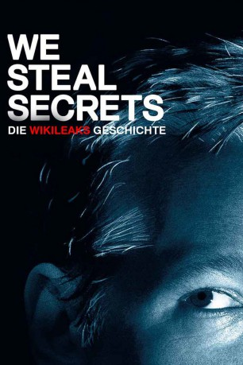

#5124 We Steal Secrets: Die WikiLeaks Geschichte
Alternativ: We Steal Secrets: The Story of WikiLeaks
 
 IMDB-Wertung: 6.9 / 10
IMDB-Wertung: 6.9 / 10  Metascore: 0
Metascore: 0 
Julian Assange und die von ihm mitbegründete Nachrichten Plattform WikiLeaks entwickelte sich zur weltweiten Medien-Sensation, als auf dem Portal streng vertrauliche Daten des US-amerikanischen Militärs veröffentlicht und der allgemeinen Bevölkerung zugänglich gemacht wurden. Die geheimen Video- und Textdokumente, die WikiLeaks von dem damals 22 Jahre alten, amerikanischen Soldaten Bradley Manning zugespielt wurden, warfen ein internationales Schlaglicht der Empörung auf das Verhalten des US-Militärs während der Kriegseinsätze im nahen Osten und machten die bis dahin weitestgehend unbekannte Website zum globalen Politikum. In der Dokumentation „We Steal Secrets: The Story of WikiLeaks“ befasst sich Regisseur Alex Gibney mit der Entstehungsgeschichte von WikiLeaks und beleuchtet die mediale Kontroverse um ihren Mitbegründer Julian Assange.
Jahr: 2013
Dauer: 129 Minuten
FSK: 12
Land: USA Studio: Focus WorldTonspuren: DTS - ,
Untertitel: Deutsch,
Auflösung: 1080p (1920x1040) Größe: 9625 MB
Genre: Dokumentation
Regisseur: Alex Gibney
Drehbuch: Serpent Films Productions
Soundtrack:
Darsteller:
- Alex Gibney als Himself - Narrator
- Julian Assange als Himself - Founder, WikiLeaks , archive footage
- Michael Hayden als Himself - Former NSA and CIA Director
- Chelsea Manning als Herself - WikiLeaks Source , archive footage
- Vaughan Smith als Himself - Video Journalist
 Hillary Clinton als Herself , archive footage
Hillary Clinton als Herself , archive footage Katie Couric als Herself , archive footage
Katie Couric als Herself , archive footage- Rahm Emanuel als Himself , archive footage
- Robert Gates als Himself , archive footage
- Newt Gingrich als Himself , archive footage
- Mike Huckabee als Himself , archive footage
- Michael Moore als Himself , archive footage
- Mike Mullen als Himself , archive footage
- Bill O'Reilly als Himself , archive footage
 Barack Obama als Himself , archive footage
Barack Obama als Himself , archive footage- Diane Sawyer als Herself , archive footage
- John 'FuzzFace' McMahon als Himself - NASA Network Administrator
- Robert Manne als Himself - Professor, La Trobe University, Melbourne
- Heather Brooke als Herself - Journalist
- J. William Leonard als Himself - U.S. Government Classification Czar
- Daniel Domscheit-Berg als Himself - Former WikiLeaks Spokesperson
- Smári McCarthy als Himself - Icelandic Digital Freedom Society
- Birgitta Jónsdóttir als Herself - Icelandic Parliamentarian
- Adrian Lamo als Himself - Hacker
- Timothy Douglas Webster als Himself - Former Army Counterintelligence Agent
- Jason Edwards als Himself - Friend of Bradley Manning
- Nick als Himself - Served with Bradley Manning
- Jihrleah Showman als Herself - Bradley Manning's Supervisor
- Philip J. Crowley als Himself - Former Assistant Secretary of State for Public Affairs
- Mark Davis als Himself - Journalist & Filmmaker
- Ken Day als Himself - Australian Federal Police
- Kevin Lee Poulsen als Himself - News Editor, Wired.com
- Nick Davies als Himself - Investigative Journalist, The Guardian
- Iain Overton als Himself - Former Managing Editor, Bureau of Investigative Journalism
- James Ball als Himself - Journalist
- Gavin MacFadyen als Himself - Director, Centre for Investigative Journalism
- Donald Boström als Himself - Investigative Journalist
- Anna Ardin als Herself - Former WikiLeaks Volunteer
- Helena Kennedy als Herself - Former Legal Adviser to Julian Assange
- Rafael Correa als Himself , archive footage
- Tom Flanagan als Himself , archive footage
- Lindsey Graham als Himself , archive footage
- Bill Keller als Himself , archive footage
- Mitch McConnell als Himself , archive footage
- Candice Miller als Heraelf , archive footage
- Goff Morrell als Himself , archive footage
- Ron Paul als Himself , archive footage
- Mark Stephens als Himself , archive footage
Datei: X:\Dokumentationen\Internet+Science\We Steal Secrets Die WikiLeaks Geschichte (2013, FSK12, 1920x1040).mkv seit 23.12.2016
Festplatte: HD Serien(SU-Z)+Dokus+Musik
 Es gibt insgesamt 25 Filme in der Gruppe 'Dokumentationen\Internet+Science'
Es gibt insgesamt 25 Filme in der Gruppe 'Dokumentationen\Internet+Science'